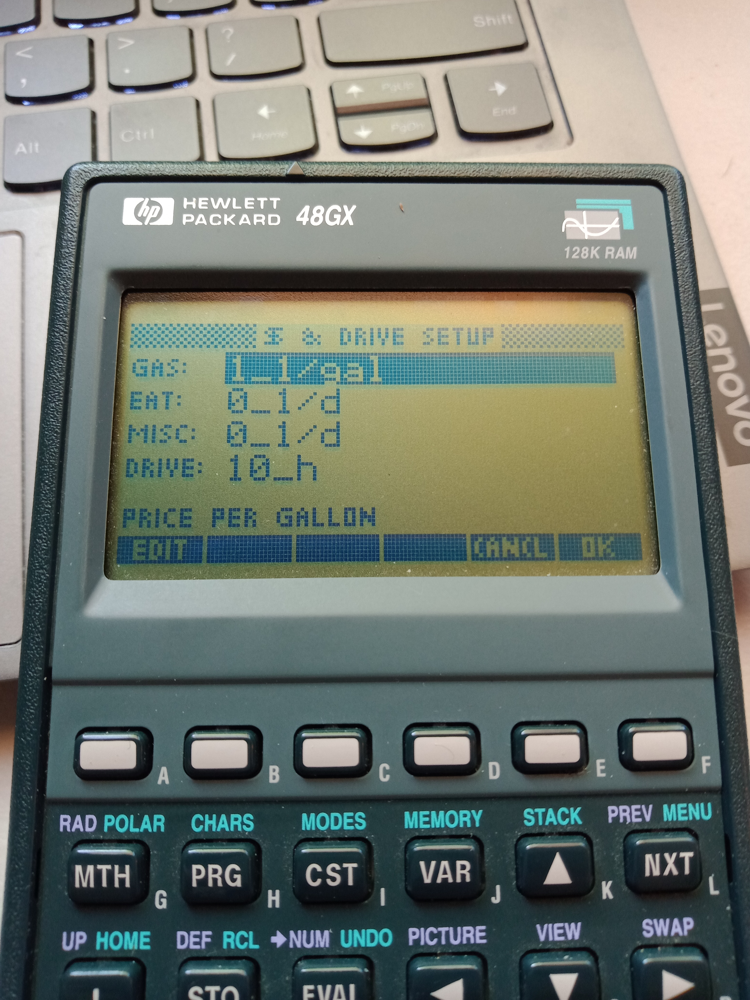

HP48G Resurrection!
The HP48G Series - Venerable, classic, still relevant.
I bought one for my university studies a while back. At the time there were no "laptops" or hand-held computers, like the smart-phones of today.
No. There were university dungeon basements with orange monitors, dumb terminals, and dot matrix printers connected to VAX mainframes!
So I got one of these, and life changed:
After university, I was still a software engineer, even if it didn't show... And I still used my 48. I made a number of programs, including a cool Mandelbrot set explorer! But for some reason the only ones to survive were called 'GEB/', 'TRIP', and 'MIKE'.
These are on github under my HP48 repo.
This software was built with "RPL" and is a blending of the languages Forth and Lisp.
Recently I decided to take my HP48GX calculator out of storage and maybe sell it... Hrm. But naturally I had to test it first... Rabbit hole! Everything worked fine with the calculator systems, but I couldn't get my software to run. So I put on my debugging helmet (cape?) and got busy.
First I had to figure out a way to tranfer things back and forth, between the calculator and my (Linux) computer.
Fortunately I had the foresight to purchase an "HP48x to PC Interface Kit" at some point. This is just a serial cable on one end and a proprietary HP 4-pin jack on the other. With this in hand, I installed "C-Kermit" and got busy!
▸ sudo ~gene/bin/kermit
...
(/home/gene/sandbox/HP48/) C-Kermit>
First, after much scouring of the internet, I found this post and set these things (ignoring the ; comments) accrding to it:
set port /dev/ttyUSB0 ; Where...
set speed 9600 ; Serial port speed, HP48 defaults to 9600, also supports 4800 2400 1200
set carrier-watch off ; Full serial wiring includes a "carrier detect" pin, tell it's not needed here.
set modem type direct ; Probably means no need to send AT commands to a modem or anything.
set flow none ; Don't use hardware (RTS/CTS wires) or software (XON/XOFF characters) flow control.
set parity none ; 8 data bits, no parity
set control prefix all ; Not sure about what this means, worked after I set it.
set file type binary ; Binary if you want to run it. ASCII for text source listings.
SET SEND PACKET-LENGTH 64 ; CRUCIAL!
To send from HP48 to PC, on PC type:
server
The reverse is just:
RECV
to recieve a file (from the PC) to the HP48 combined with:
send some-filename
on the PC.
So I did this for my TRIP program that is on github and in the cloned repository on my local machine.
Ok with that on my 48, I tried running it and...Barf! It halted on a couple undefined sub-programs. Ugh! Also there was no documentation whatsoever. Ugh again!
So I rolled up my sleeves and got busy understanding everything that TRIP did, so that I could "fill-in the blanks" - not a small task.
How did I see the source code you ask? I used kermit in ASCII mode (set on both the PC and the calculator sides), and re-uploaded to my computer. Then I could open TRIP in a text editor. (And I went ahead and uploaded that ASCII version to github.)
But what does one of these HP48G "RPL" programs even look like? Here is the COST sub-program:
« GAS GAS$ *
EAT$ MISC$ +
DIST RATE /
'1_d' CONVERT * +
2 RND
»
The first lines say this (in reverse Polish notation): "Multiply the amount of gas by the price of gas. Then add the price to eat to any miscellaneous costs." These amounts are expressed in units. That is, GAS is X gallons (e.g. 10_gal), GAS$ is price per gallon (e.g.4.5_1/gal), EAT$ and MISC$ are both given per day (e.g. 20_1/d). The same goes for DIST (distance) and RATE. The former is in miles (or could be kilometers). The latter is miles per hour (e.g. 65_mi/h). The third and fouth lines say to divide the distance by the rate, giving us Y hours. This value is converted to days and multiplied by the per-day eat and miscellaneous costs. Finally, this cost is added to the cost of the gas we will need, and the number is rounded to two decimal places, as it is a currency.
I had to go over every program and sub-program debugging step-by-step (i.e. [PRG][NXT][RUN][DBUG][SST]). Whew! But I was able to successfully figure everything out and make a couple major improvements - the first upgrade in 28 years! :D
Here are photos of TRIP2 in action (with testing values):

Currently, the ETA is correct except for the edge case shown, where the total time divided by the drive time is 0 (meaning the trip should be done at the end of the previous day.)